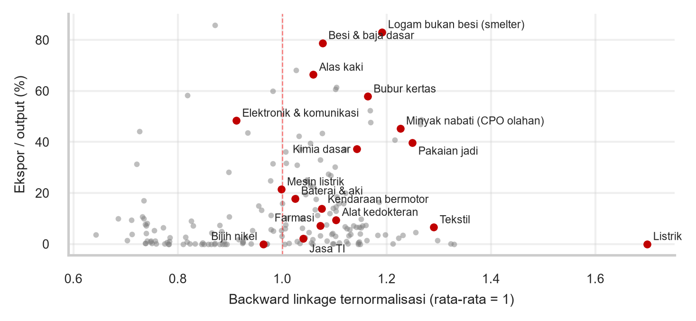
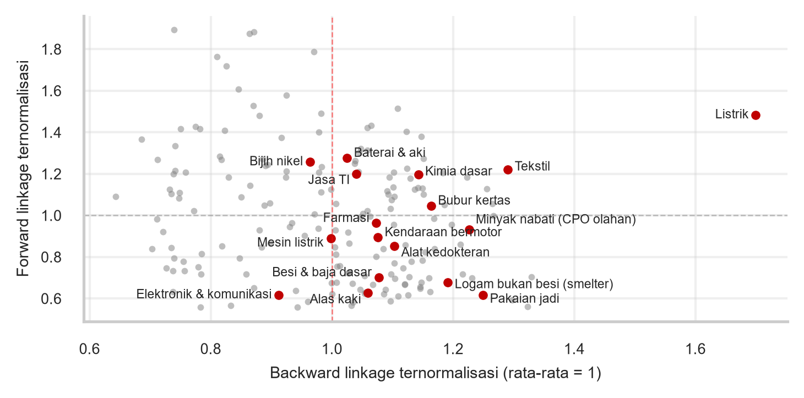

Sektor Prioritas Insentif Pajak Pasca Pajak Minimum Global
Masukan Dewan Ekonomi Nasional — Diskusi DJSEF, Kementerian Keuangan
![]()
20 Oktober 2026
Apa yang berubah dengan Pajak Minimum Global
- PMK 136/2024: DMTT dan IIR sejak 1 Jan 2025, UTPR sejak 1 Jan 2026
- Cakupan: grup multinasional dengan omzet konsolidasi \(\geq\) EUR 750 juta (722 grup menurut DJP); potensi DMTT TP 2025 baru Rp86 miliar dari 3 grup, IIR Rp4,4 triliun
- ETR per yurisdiksi < 15% → top-up tax; DMTT Indonesia memungut lebih dulu
- Tax holiday bagi MNE dalam cakupan dipungut kembali oleh DMTT (PMK 69/2024)
- Batas usulan tax holiday 31 Des 2025; skema pengganti belum terbit
Pertanyaannya bukan lagi “berapa besar insentif”, tetapi “insentif apa, untuk siapa”.
Top-up tax: mekanisme dasar
\[ TopUp_j = \max\{0,\ 15\% - ETR_j\} \times \left(GloBE_j - SBIE_j\right) - DMTT_j \]
- \(ETR_j\): pajak tercakup dibagi laba GloBE grup di yurisdiksi \(j\)
- \(GloBE_j\): laba akuntansi yang disesuaikan menurut aturan GloBE
- \(SBIE_j\): pengecualian berbasis substansi, ±9,4% payroll + ±7,4% aset (2026)
- \(DMTT_j\): top-up yang sudah dipungut Indonesia sendiri
Tax holiday + DMTT: separuh kembali ke kas negara
| Ilustrasi anak usaha MNE, 2026 | Nilai |
|---|---|
| Laba GloBE (payroll 50; aset berwujud 300) | 100,0 |
| SBIE = 9,4% × 50 + 7,4% × 300 | 26,9 |
| PPh normal 22% → dibebaskan tax holiday 100% | 22,0 |
| DMTT = 15% × (100 − 26,9) | 11,0 |
| Manfaat riil bagi investor | 11,0 |
| — dari selisih tarif 22% → 15% | 7,0 |
| — dari laba yang dilindungi SBIE (15% × 26,9) | 4,0 |
Manfaat riil \(\approx\) 11 dari 22: 7 dari selisih tarif ke 15%, \(\approx\) 4 dari SBIE; sisanya dipungut DMTT. Tax holiday + DMTT tetap lebih besar daripada sekadar memotong tarif ke 15%.
Ruang desain yang tersisa dalam aturan GloBE
- Grup < EUR 750 juta dan investor domestik
- Tax holiday/allowance tetap efektif
- Laba setara % payroll + aset berwujud aman
- Insentif terkait substansi lebih tahan
Diperlakukan sebagai penghasilan, tetapi wajib refund tunai \(\leq\) 4 tahun.
Berbasis capex/produksi; dibatasi ±5,5% payroll atau depresiasi.
Bagi MNE dalam cakupan, ruang insentif efektif terbatas (kira-kira separuh nominal, ditambah QTI); di atas itu insentif hanya memindahkan penerimaan.
Seleksi Sektor
Pilar Dua memilah perusahaan, bukan sektor
- Insentif berbasis pengeluaran: capex, R&D, vokasi
- Dirancang lolos QTI/SBIE
- Bukan pembebasan berbasis laba
- Tax holiday/allowance tetap bekerja
- Sasaran: PMA menengah, investor domestik
- Perlu evaluasi redundancy
Satu sektor bisa memerlukan dua instrumen, tergantung struktur kepemilikan pelakunya.
Lima filter penentuan sektor sasaran
| Filter | Pertanyaan kunci | Proksi data |
|---|---|---|
| Mobilitas investasi | Mudah pindah ke negara pesaing? | Orientasi ekspor |
| Spillover | Keterkaitan & multiplier domestik | Tabel I-O BPS |
| Eksposur Pilar Dua | Porsi pelaku \(\geq\) EUR 750 juta | CbCR (DJP) |
| Kecocokan instrumen | Terkait capex/payroll/R&D? | Intensitas faktor |
| Biaya fiskal | Biaya per pekerjaan baru | Belanja Perpajakan |
Insentif paling layak untuk investasi yang mobile, ber-spillover tinggi, dan bisa dikaitkan ke substansi.
Keterkaitan domestik vs orientasi ekspor

185 produk; titik merah = kandidat. Sumber: Tabel I-O 2020 BPS, diolah.
Pemetaan kandidat sektor: data I-O 2020
| Sektor | \(\widetilde{BL}\) | Ekspor | Multiplier upah | Instrumen |
|---|---|---|---|---|
| Alas kaki, pakaian jadi | 1,06–1,25 | 40–66% | 0,29–0,43 | Berbasis payroll |
| Kendaraan, baterai | 1,03–1,08 | 14–18% | 0,30–0,38 | QTI capex |
| Elektronik | 0,91 | 48% | 0,28 | Capex/R&D pemasok komponen |
| Farmasi, alkes | 1,07–1,10 | 7–9% | 0,29 | Super deduction R&D |
| Kimia dasar, bubur kertas | 1,14–1,16 | 37–58% | 0,23–0,32 | Allowance; bubur kertas terikat bahan baku |
| Smelter, besi baja | 1,08–1,19 | 79–83% | 0,22–0,23 | Tanpa insentif PPh |
Elektronik ber-spillover rendah (perakitan); padat karya ekspor paling cocok untuk insentif berbasis payroll.
Rekomendasi desain instrumen
- Geser dari pembebasan berbasis laba ke insentif berbasis pengeluaran
- Rancang ulang super deduction dan investment allowance agar memenuhi kriteria QTI
- QRTC selektif saja: refund tunai berarti beban kas APBN, bukan sekadar belanja perpajakan
- Sumber daya alam yang terikat lokasi: gunakan instrumen rent capture, bukan insentif
- Syarat berbasis belanja/produksi, bukan ekspor/TKDN, agar tidak rawan CVD dan sengketa WTO (SCM Pasal 3)
- Lengkapi dengan faktor non-pajak: kepastian regulasi, perizinan, logistik, energi
Ketidakpastian dan kebutuhan data
- Rincian substance cap SBTI masih perlu dicek ke teks OECD
- Bukti redundancy insentif di Indonesia pasca-2020 masih terbatas
- Eksposur Pilar Dua per sektor hanya bisa dihitung dari CbCR di DJP
- Paket side-by-side masih berkembang; desain insentif perlu klausul evaluasi
- DEN siap membantu analisis linkage dan simulasi CGE dampak per sektor
Terima kasih
Lampiran: dasar hukum dan rujukan
- PMK 136/2024 tentang Pengenaan Pajak Minimum Global
- PER-6/PJ/2026, aturan teknis DJP (berlaku 4 Mei 2026)
- PMK 130/2020 jo. PMK 69/2024 (tax holiday; batas usulan 31 Des 2025)
- OECD (Jan 2026), Side-by-Side Package: SbS, UPE, Simplified ETR, SBTI Safe Harbour
- OECD (2022), Tax Incentives and the Global Minimum Corporate Tax
- BPS, Tabel Input-Output Indonesia 2020 (185 produk, transaksi domestik)
Lampiran: sektor kunci menurut backward dan forward linkage

Kanan atas = sektor kunci. BL Listrik tinggi: 44% inputnya dari produk listrik sendiri. Sumber: Tabel I-O 2020 BPS, diolah.